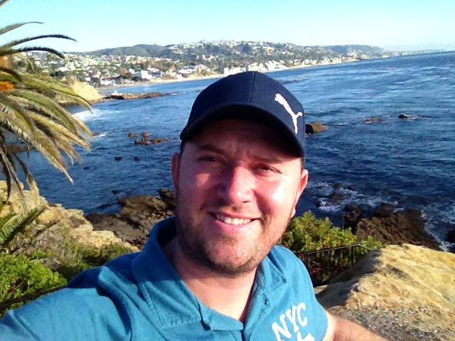
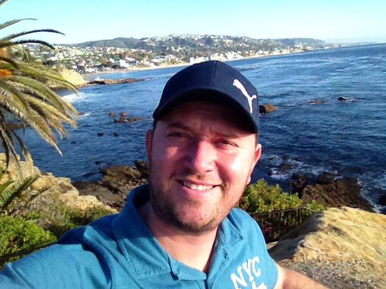
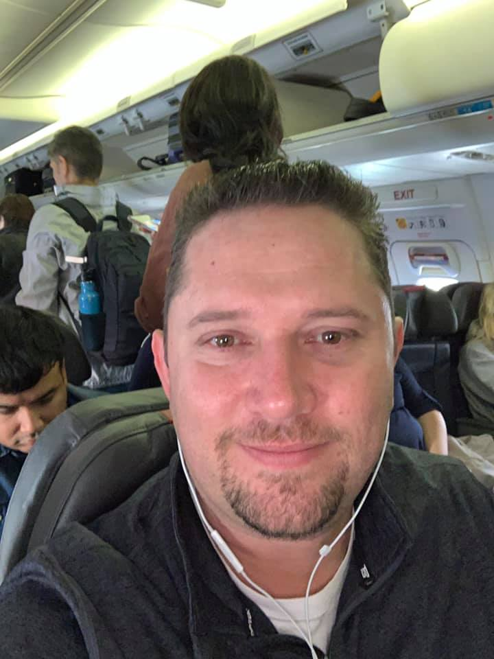
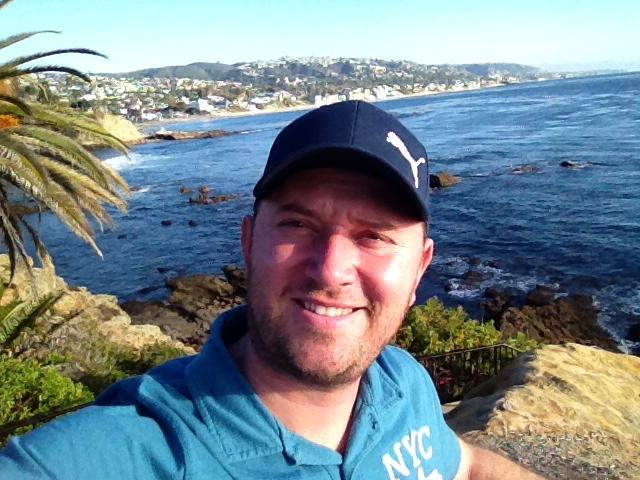
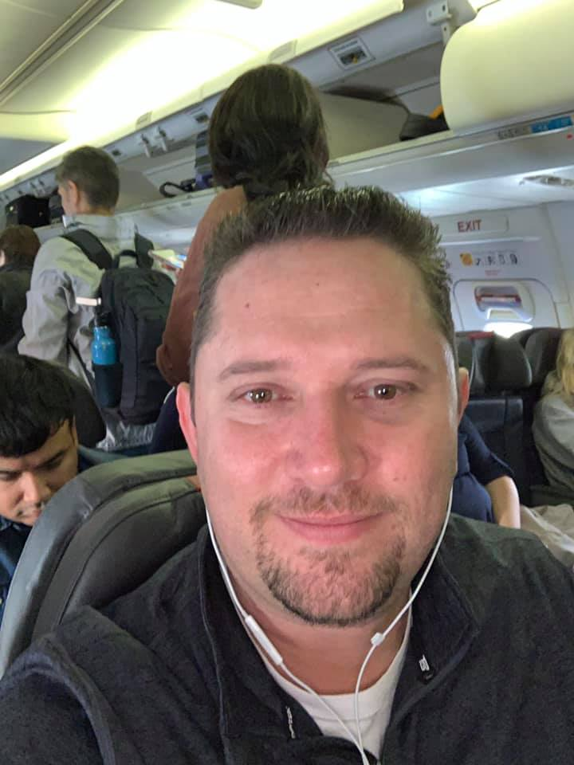
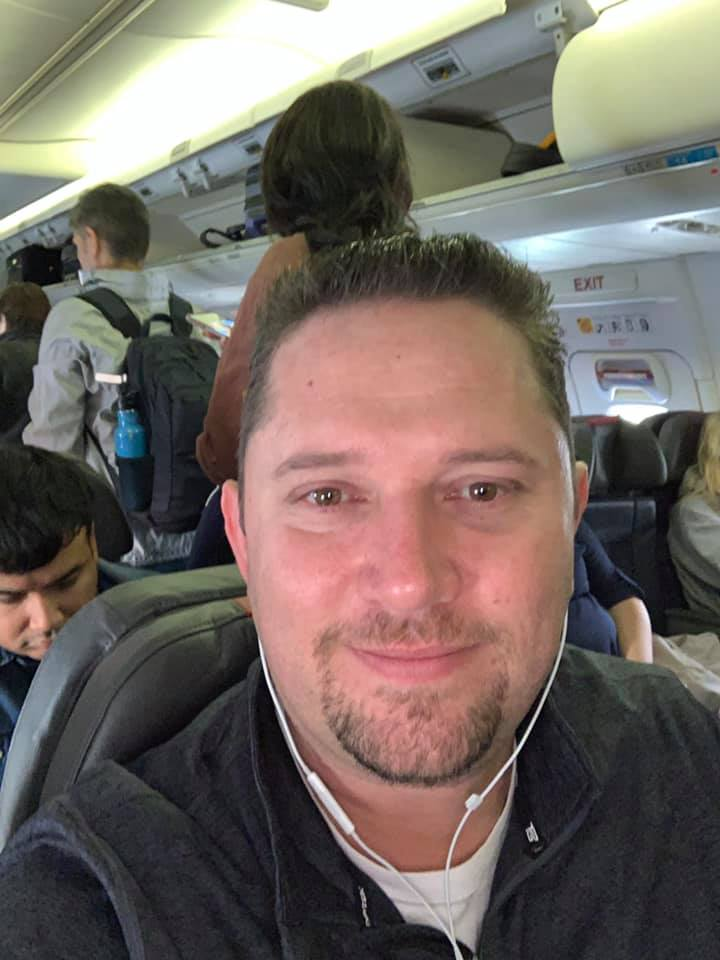
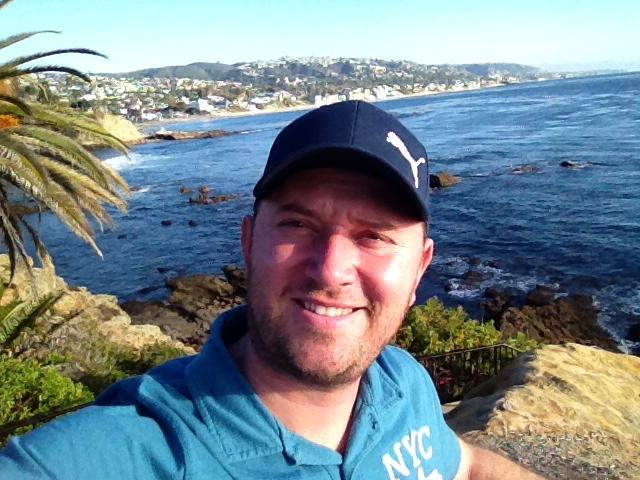
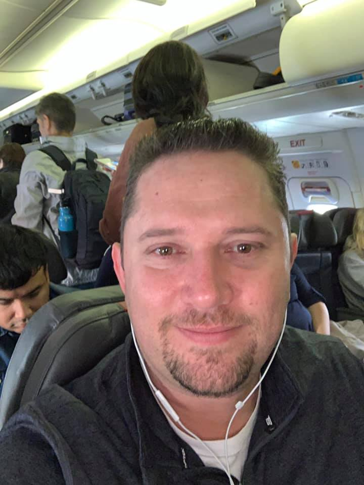

 





“A professional fighter has got to learn to hit and not get hit, and at the same time be exciting. That’s what professional boxing is about.” 2 “The fact that he is here and doing what he’s doing, and doing as well as he’s doing and improving as he has, gives me the motivation and interest to stay alive. I believe a person dies when they no longer want to live.” – Cus D’Amato speaks on his motivation to stay alive is because of Mike Tyson. 3 “When you get to the point where you’re not excited and able, see that’s what you got to tell yourself, completely relax. Be able to see everything that’s going on and sense and anticipate shots, and that can’t happen unless you relax.” 4 “You do what I tell you to do and if it doesn’t work, then you can leave.” – Mike Tyson recalls what Cus D’Amato told him when he first moved into Cus’ house. 5 “It is the mark of a great fighter when he has character plus skill, because a fighter with character and skill will often rise and be a better fighter because of this.” 6 “When a person’s interested in something, they’re willing to tolerate any kind of problems that may come up.” 7 “I’m not a creator. What I do is discover and uncover. See my job is to take the spark and fan it. When it starts to become a little flame I feed it, and I feed the fire until it becomes a roaring blaze, and then when it turns to a roaring blaze I pour used logs on it. Then you really got a fire going.” 8 “I feel that all boys growing up in the environment that he did would require help, patience and perhaps understanding cos’ I try to make them feel, and I hope I did, that I understand this kind of life. I grew up in a tough neighbourhood mysef.” – Speaking on Mike Tyson’s youth. 9 “If Ray Robinson is considering committing suicide, I don’t want to use Floyd Patterson as a vehicle.” – On the prospect of Sugar Ray Robinson moving up in weight to fight Patterson. 10 “I don’t allow people to intimidate me, for no other reason than to set an example for my boxers.” 11 “A man who’s thinking or worried about getting hit is not gonna have a good sense of anticipation. He will in fact get hit.” 12 “I don’t succeed when I make a guy or hope a guy becomes champion of the world. I succeed when I make the fighter champion of the world and independent of me.” 13 “To see a man beaten not by a better opponent, but by himself is a tradgedy.” 14 “Though he didn’t have skill, he had that quality of determination and he just kept coming even though he got hit with some good right hands on the jaw.” – Cus’ first impressions of Mike Tyson when he first saw him spar with Bobby Steward, the man responsible for introducing Cus to Tyson. 15 “Character is that quality upon which you can depend under pressure and other conditions.” 16 “You can teach better by setting examples, than we do by explaining and talking about them.” 17 “Nature’s a lot brighter than what people think. Little by little, we lose our friends that we care about, and little by little, we lose our interests til’ finally we say “well what the hell am I doing around here”, we have no reason to go on. But I have a reason with Mike here.” – Cus speaks about old age and his reason to stay alive. 18 “Boxing is a sport of self-control. You must understand fear so you can manipulate it. Fear is like fire. You can make it work for you; it can warm you in the winter, cook your food when you’re hungry, give you light when you’re in the dark and produce energy. Let it go out of control and it can hurt you, even kill you…fear is a friend of exceptional people.” 19 “I know you know how to handle them. I know you have an answer for anything they may try to do for you, or would do. So I think the outcome is predictable.” – Cus speaks to Tyson about the Olympic Trail Elimination. 20 “The man who has the confidence that his ability will not be denied, especially when you know what your ability is, nobody can con you.” 21 “The hero and the coward both feel the same thing, but the hero uses his fear, projects it onto his opponent, while the coward runs. It’s the same thing, fear, but it’s what you do with it that matters.” 22 “The fighter that’s gone into the ring and hasn’t experienced fear is either a liar or a psychopath.” 23 “Remember, it’s always good to throw the punch where you can hit him and he can’t hit you. That’s what the science of boxing is all about.” – Cus echoes the importance of creating angles and controlling range. 24 “Since your style of fighting is dependent on split second timing – speed, coordination, as well as power – your reflexes will have suffered because of inactivity of 3 years, and in my opinion, the outcome would be very much in doubt.” – When Muhammad Ali asks Cus if he thinks Joe Frazier can beat him. 25 “No matter what anyone says, no matter the excuse or explanation, whatever a person does in the end is what he intended to do all along.” 26 “Greatness is not a measure of how great you are but how great others came to be because of you.” 27 “Boxing is entertainment, so to be successful a fighter must not only win but he must win in an exciting manner. He must throw punches with bad intentions.” 28 “Losers are winners who quit, even if you lose, you still win if you don’t quit.” 29 “The thing that bothers me about him is this; too frequently, whether he’s putting it on or not, too frequently he’s been taking solid punches with a consistency that’s bothering me.” – When watching Muhammad Ali sparring in preparation for the Jerry Quarry fight. 30 “There is no such thing as a natural puncher. There is a natural aptitude for punching and that is different. Nobody is born the best. You have to practice and train to become the best.”